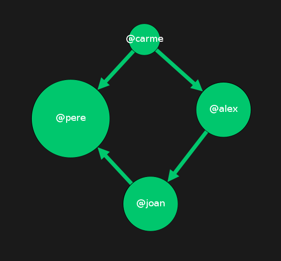

El segundo ejercicio individual de la asignatura consiste en procesar los datos obtenidos de la API de Twitter y realizar un análisis de la conversación social sobre los candidatos a la alcaldía de Barcelona en las elecciones Municipales del 2023. Debido a las características de la API de Twitter, y la imposibilidad de obtener una clave de acceso para los alumnos, se entregan directamente los datos puros obtenidos de la API, en formato JSON.
En este enlace encontraréis un archivo .zip que contiene los archios JSON procedentes de una consulta a la API de Twitter. Los datos se corresponden a todos los tweets que coinciden con la query: "Basha Changue OR Ernest Maragall OR Ada Colau OR Jaume Collboni OR Xavier Trias OR Anna Grau OR Eva Parera OR Daniel Sirera" publicados entre el 1/04/2023 y el 16/04/2023 en cualquier idioma. Es decir, se han recopilado todos los tweets que contienen alguna de las combinaciones indicadas.
Estos archivos .json se deberán procesar para acabar obteniendo un dataset analizable con Tableau (.csv). Pero también se deberá realizar un procesado de datos que nos permita observar la conversación mediante Gephi, en un formato de grafo.
Vamos a dividir este trabajo en dos partes. La primera (A) se centrará en crear un archivo .csv que sea analizable con Tableau. La segunda (B), la dedicaremos a analizar con mayor profundidad las relaciones existentes en el dataset para generar redes de interacción o relaciones.
Este apartado exige observar el dataset y entender qué relaciones podemos inferir a partir de los datos. Por ejemplo: ¿Sabemos qué usuarios mencionan a otros? Si es así, podemos generar un grafo de menciones que nos ayude a comprender con mayor profundidad la forma en cómo los usuarios interactúan, o qué usuarios acaparan parte de la conversación.
Para esta parte del ejercicio, se puede trabajar directamente sobre el dataset ya creado en el apartado anterior, y generar nuevos documentos .csv que contengan la columna "source" y "target" para luego importarlos con Gephi.
Por ejemplo, un archivo .csv que contenga un grafo sería similar a esto:
| Source | Target |
| @Joan | @Pere |
| @Carme | @Pere |
| @Carme | @Alex |
| @Alex | @Joan |
Lo que acabaría dando este grafo:
Instrucciones para la entrega:
Criterios de evaluación:
Entrega: 2 de mayo del 2023 23:59. Se deberá subir un .pdf o .txt con un link al repositorio en el Campus Virtual.